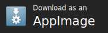

Distributing AppImages¶
There are several ways to distribute AppImages to users. Most likely, AppImages are distributed from their creator to the users.
The following section contains some details on how AppImages are commonly distributed.
Contents
Hosting AppImages¶
Most commonly, AppImage creators host the files on a standard web server. This is the easiest and most accessible way.
We recommend that you put the AppImage for Linux on your project’s download page alongside the dmg for macOS and the exe for Windows, like so:

For open source projects, if your project is located on GitHub, we recommend that you publish your AppImage in addition on GitHub Releases.
Note
For AppImageUpdate to work properly, it is required that the web server supports HTTP range requests. Most web hosts support this, as the same technology is used for navigating an MP3 files, for example.
Some hosted services are known not to support range requests right now. These involve:
If you use such a service and wish to use AppImageUpdate with it, please ask the providers to enable range requests.
Complying with licenses¶
Even under open source licenses, distributing and/or using code in source or binary form may create certain legal obligations, such as the distribution of the corresponding source code and build instructions for GPL licensed binaries, and displaying copyright statements and disclaimers. As the author of an application which you are distributing as an AppImage, you are responsible to obey all licenses for any third-party dependencies that you include in your AppImage, and ensure that their licenses and source code are made available, where required, together with the release binaries. AppImageKit itself is released under the permissive MIT license.
Do not put “Linux” into the Appimage file name¶
Please DO NOT put “linux” into the file name of an AppImage. It is abundantly clear that an .exe is for Windows, a .dmg is for the Mac and that .AppImage is for Linux. No need to duplicate.
Do not put AppImages into other archives¶
Please DO NOT put an AppImage into another archive like a .zip or .tar.gz.
While it may be tempting to avoid users having to set permission, this breaks desktop integration with the optional appimaged daemon, among other things. Besides, the beauty of the AppImage format is that you never need to unpack anything. Furthermore, packing an AppImage into some form of archive prevents the AppImage from being added to the central catalog of available AppImages at https://github.com/AppImage/appimage.github.io.
Making your AppImages discoverable¶
Now that you have produced your AppImage, you want users to be able to easily find it. To get users, you need to make your AppImage known to the world.
Application website¶
The most obvious place to advertise your AppImage is to prominently featured on your application’s download page.
‘Download as an AppImage’ banner¶
You can use a “Download as an AppImage” banner alongside other similar buttons:
Link this banner directly to the latest version of your AppImage, or to a download page containing the link to the latest version of your AppImage.
Banner by Khushraj Rathod under the CC0 license
AppImageHub¶
You may want to add your AppImage to AppImageHub, a crowd-sourced directory of available, automatically tested AppImages with data that 3rd party app stores and software centers can use. Given an URL to an AppImage, it inspects the AppImage and puts it into a community-maintained catalog.
App stores and software centers can consume the metadata collected by this project. See AppImage ecosystem.
Projects already using this data include:
Nitrux, NX Software Center: https://github.com/Nitrux/nx-software-center
Please contact us if you are using this data so that we can list your project here
To get your AppImage included, create a new file at https://github.com/AppImage/AppImageHub/new/master/data and send a pull request.
The file should contain one line with a link to the GitHub repository that hosts AppImages on its Releases page.
Alternatively, a link to the AppImage. Nothing else.
Then send a pull request. Travis CI will instantly perform an automated review of the AppImage, and in case it succeeds, you will see a green result in your pull request. If you get a red result, check the log of the Travis CI build, and fix it.
Once an application is added to AppImageHub, it is not updated automatically anymore unless its input file changes. In case you need to get your entry on AppImageHub updated (e.g., you provided new meta information in your latest AppImage release), you need to submit another pull request. At the bottom of your AppImageHub page, you will find a link named “Edit the input for this page” with which you can do this. If the URL has stayed the same, adding or removing a “#” character in a new line will trigger an update. Remember that AppImageHub does not keep track of versions, so it is not necessary to do this just because you released a new version of your application.
As a format, AppImage is designed in a way that does not impose restrictions on the person generating AppImages. Basically you are free to put inside an AppImage whatever you want. For AppImageHub, however, additional rules apply. AppImages submitted to AppImage hub undergo automatic and possibly additional manual review.
Must be downloadable from an URL. Our testing system fetches the AppImage using
wget. Currently we cannot get AppImages from locations behind authentication and/or cookie-protected locations. For commercial applications we recommend to have a generally downloadable demo/trial version. Please contact us if you would like to add your commercial AppImage to the directory and it is not available for general downloadMust run on the oldest still-supported Ubuntu LTS release (16.04 as of 2019, for up to date information see https://en.wikipedia.org/wiki/Ubuntu#Releases) without the installation of additional packages. Targeting the oldest still-supported LTS is to ensure that the AppImage will run not only on the very latest, but also on older target systems, such as enterprise distributions (not limited to Ubuntu)
Must execute in our Travis CI based testing environment
Must pass appdir-lint.sh
Must have a desktop file that passes
desktop-file-validateMust run without active Internet connection (and at least show some information)
Should have an AppStream metainfo file in
usr/share/metainfo. If it does, must passappstreamclivalidationShould show a useful screen rather than some crude dialog box since the main window will be used for the main screenshots. Note that you can provide your own screenshots by using an AppStream metainfo file
Should be available under a constant URL that does not contain the version number. Alternatively, should be available on GitHub Releases or the openSUSE Build Service (you are free to suggest additional serices like these)
Future catalogs¶
In the future, we may want to use decentralized peer-to-peer databases for the catalog of AppImages.
We are currently investigating technologies such as IPFS and would be happy to win contributors in this area.
Social Media¶
Also be sure to advertise your new AppImage on social media, for example on Twitter, blogs, etc. Be sure to use the
#AppImagehashtag for additional discoverability.